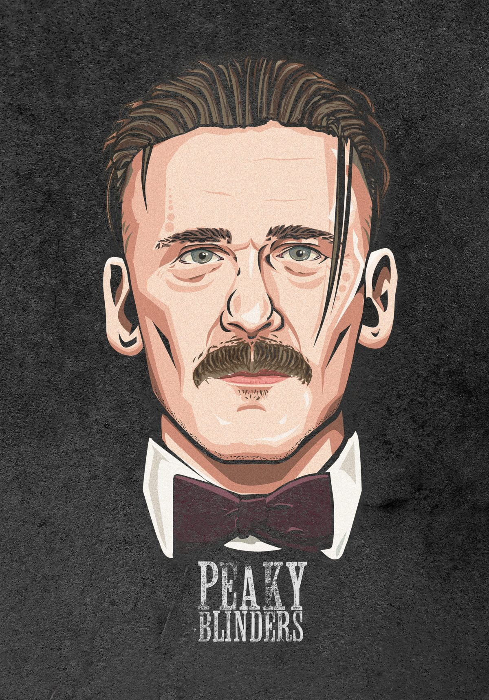

ARTHUR
Arthur es retratado como un hombre de temperamento explosivo y propenso a la violencia. Es conocido por su naturaleza impredecible y su amor por las peleas callejeras. Aunque inicialmente puede parecer despiadado, Arthur muestra una lealtad inquebrantable hacia su familia y está dispuesto a hacer cualquier cosa para protegerla El líder de la banda judía en la ficción recibió un disparo en la cara en el cierre de la cuarta temporada, haciendo creer a los espectadores que había fallecido. Sin embargo, al final de la quinta tanda de capítulos se descubrió que había sobrevivido.
